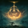

 ELDEN RING
Detalles
 |
|
| Tiempo de juego | No Jugado |
| Última actividad | Nunca |
| Añadido | 11/5/2024 22:37:13 |
| Modificado | 11/6/2024 22:30:18 |
| Estado de finalización | No Jugado |
| Librería | Playnite |
| Fuente | 4TB TANK |
| Plataforma | PC (Windows) |
| Fecha de lanzamiento | 2/24/2022 |
| Puntuación de la Comunidad | 92 |
| Puntuación de la Crítica | 94 |
| Puntuación de usuario | |
| Género | Acción Rol |
| Desarrollador | FromSoftware, Inc. |
| Editor | Bandai Namco Entertainment FromSoftware, Inc. |
| Característica | Cloud Saves Compat. Total Con Mando Cooperativo Cooperativo En Línea Cromos De Jcj Jcj En Línea Logros De Multijugador Préstamo Familiar Un Jugador |
| Enlaces | Punto de encuentro Discusiones Guías Noticias Página de la tienda PCGamingWiki Logros |
| Tag | 3D Acción Ambientales Cooperativos Cooperativos en línea Difíciles Fantasía Fantasía oscura Gran banda sonora JcJ Multijugador Mundo abierto Para toda la familia Personalización de personajes Rol Rol de acción Tercera persona Tipo «Dark Souls» Un jugador Violentos |
Descripción
EL NUEVO JUEGO DE ROL Y ACCIÓN DE AMBIENTACIÓN FANTÁSTICA.
Álzate, Sinluz, y déjate guiar por la Gracia para blandir el poder del Círculo de Elden
El dominio del terreno y conocer sus secretos pueden ayudarte a superar enemigos y a derrotar jefes formidables, o a conducir a los jugadores invasores hasta trampas.


No importa si prefieres una confrontación física directa, lanzar hechizos de forma táctica o el sutil arte del sigilo; siempre encontrarás equipo que se adapte a tus decisiones.


También hay muchas oportunidades para enfrentarse a otros jugadores, bien mediante invasiones en cooperativo, duelos con invitación, o mediante las múltiples opciones de batalla disponibles en los tres Coliseos.

Álzate, Sinluz, y déjate guiar por la Gracia para blandir el poder del Círculo de Elden
• Un mundo sobrecogedor lleno de emoción y misterio
Las Tierras Intermedias forman parte de un extenso continente donde magníficos campos abiertos y gigantescas mazmorras con diseños tridimensionales complejos se conectan. Mientras exploras, te espera la emoción de descubrir amenazas desconocidas y abrumadoras.El dominio del terreno y conocer sus secretos pueden ayudarte a superar enemigos y a derrotar jefes formidables, o a conducir a los jugadores invasores hasta trampas.
• Derrota enemigos poderosos en un intenso combate
El combate de ELDEN RING es fácil de aprender, aunque hay que profundizar mucho para dominarlo por completo. Si quieres convertirte en Señor del Círculo, tendrás que probar el equilibrio entre atacar y evitar el daño, usar una gran variedad de armas, hechizos e invocaciones, y esperar el momento oportuno para aprovechar las debilidades de tu oponente.• Crea y construye tu propio personaje
Además de personalizar la apariencia de tu personaje, hay innumerables formas de combinar las armas, armadura, consumibles y magia que equipas. Puedes desarrollar a tu personaje según tu estilo de juego.No importa si prefieres una confrontación física directa, lanzar hechizos de forma táctica o el sutil arte del sigilo; siempre encontrarás equipo que se adapte a tus decisiones.
• Un drama épico nacido a partir del mito creado por George R. R. Martin
La mitología en la que se fundamenta Elden Ring fue escrita por George R. R. Martin y adaptada en una rica historia con muchas capas. Los deseos y objetivos de los personajes se entrelazan y crean una narrativa intensa que se desarrolla a lo largo de las Tierras Intermedias. Los eventos del juego pueden desentrañarse de varias formas dependiendo de tus intervenciones.• Juega junto a una enorme comunidad en todo el mundo
La comunidad de Sinluz es inmensa y muy activa. Puede que tus amigos ya se encuentren por ahí. Puedes jugar con hasta otros dos Sinluz como compañeros que cooperan, ya sea usando una contraseña compartida para invitarlos o invocándolos desde un altar de miembros de la comunidad cercanos.También hay muchas oportunidades para enfrentarse a otros jugadores, bien mediante invasiones en cooperativo, duelos con invitación, o mediante las múltiples opciones de batalla disponibles en los tres Coliseos.